车联网安全基础知识之质量管理&整车开发流程
车联网安全基础知识之质量管理&整车开发流程
在汽车领域有层出不穷的名词、常阻碍与同事、其他团队、其他公司的顺畅交流。除了行业黑话以外，不同的企业还有自己的专有术语。
尤其是到对于从乙方到甲方的安全从业者（尤其是现阶段还在参与安全强标流程建设与落地的），或是初入职场的新人，不是很友好。需要花时间学习,但资料都比较零散。请教老同事的解释名词，但知识碎片化严重，从点到不了面，形不成体系。如对于零部件，只是粗略的了解到有测试件和量产件，但在开发流程中有细分的 A 样、B样、C样、D 样。不同样件的定义是什么标准、规范定义，同事也讲不清楚，也很难直接在内外部检索到。在查找这些资料的时候，接触到了质量管理标准、开发流程规范、软件规范等。原计划分享一篇术语的汇总，但不想只是解释名词，还是要讲一讲来源。那就先在这里对质量标准、开发流程规范汇个总吧，为下一篇文章做个铺垫。
由于笔者对汽车开发了解不深，多数标准无原文件，资料多来源于互联网，部分为AI总结，可能存在一些偏差，欢迎斧正。
质量管理 标准、规范
之前不了解网络安全与质量之间的关系，在支撑了几次认证、内审之后，了解的越来越多。觉得还是需要了解质量体系。汽车的网络安全已经融入了质量要求，质量助力漏洞推修完成度和时效等。
在汽车行业中，为了保障产品的质量、可靠性与安全性，建立健全的质量管理体系（Quality Management System, QMS）至关重要。全球范围内，汽车制造商及其供应链广泛遵循一系列国际与行业质量标准，以实现对产品开发、生产制造、质量控制和持续改进的系统化管理。在汽车开发过程中最具代表性的质量管理规范，包括 ISO 9001、QS-9000、IATF 16949 以及 CQI 系列等标准。
ISO 9001
ISO 9001 是国际标准化组织（ISO）制定的质量管理体系（QMS）国际标准，属于ISO 9000系列的核心标准之一。ISO 9001是质量管理的基石。它为企业和其他组织提供了建立、实施、维护和持续改进质量管理体系的框架，旨在通过系统化的管理确保产品和服务持续满足客户要求及法律法规，同时提升效率和顾客满意度。
ISO 9001在汽车行业的应用具有特殊重要性，尤其是考虑到汽车产品的高复杂性、供应链长、安全性和法规要求严格等特点。车企通常会将ISO 9001与行业专属标准（如IATF 16949）结合使用，以确保全面质量管理。
ISO 9001 在质量管理中的地位类似于 ISO 27001 在信息安全中的地位,是质量管理的基石。
QS 9000
QS 9000（Quality System Requirements 9000）是由美国三大汽车制造商——通用汽车（GM）、福特汽车（Ford）、克莱斯勒（Chrysler）于1994年联合制定的汽车行业质量管理体系标准。它专门针对其一级供应商，旨在统一供应链的质量管理要求，减少重复审核，提升零部件质量。基于 ISO 9001:1994，但增加了汽车行业特殊要求（如APQP、PPAP、FMEA、MSA、SPC等核心工具）。
| 对比项 | QS 9000 | ISO 9000（ISO 9001） |
|---|---|---|
| 制定机构 | 美国三大车企（通用、福特、克莱斯勒） | 国际标准化组织（ISO） |
| 适用范围 | 北美汽车供应链 | 所有行业 |
| 核心要求 | ISO 9001 + 汽车行业特殊要求（如PPAP、APQP） | 通用质量管理体系要求 |
| 现状 | 2006年废止，被 ISO/TS 16949:2002 取代，后进一步升级为 IATF 16949:2016。 | 现行有效 |
| 认证对象 | 汽车零部件供应商 | 任何希望建立质量管理体系的组织 |
IATF 16949
IATF 16949 是国际汽车行业专用的质量管理体系标准，全称为 《IATF 16949 汽车生产件及相关服务件组织的质量管理体系要求》。它由 国际汽车工作组（International Automotive Task Force, IATF） 联合全球主要汽车制造商（如大众、通用、福特、Stellantis等）共同制定，旨在规范汽车供应链的质量管理。针对 汽车生产件（如零部件、原材料）及相关服务件（如维修件） 的制造商或供应商。不适用于整车装配厂，但整车厂通常要求其供应商必须通过此认证。以 ISO 9001:2015 为基础，是汽车行业的“加强版”质量管理标准。IATF 16949认证的前提是必须先通过ISO 9001认证。
IATF 16949 六大核心工具，如下。
| 工具 | 全称 | 用途 |
|---|---|---|
| APQP | Advanced Product Quality Planning（先期产品质量策划） | 确保产品从设计到量产的全过程质量可控，减少开发风险。 |
| PPAP | Production Part Approval Process（生产件批准程序） | 确保供应商提供的产品满足客户要求，并具备稳定量产能力。 |
| FMEA | Failure Mode and Effects Analysis（失效模式与影响分析） | 识别潜在失效模式、分析其影响和原因，并制定预防措施。 |
| MSA | Measurement System Analysis（测量系统分析） | 评估测量系统的可靠性和准确性，确保数据可信。 |
| SPC | Statistical Process Control（统计过程控制） | 通过统计方法监控生产过程，确保稳定性并预防变异。 |
| CP | Control Plan(控制计划) | 明确产品/过程的控制方法，确保质量一致性。 |
ISO 9001 与 IATF 16949 对比。
| 对比项 | ISO 9001 | IATF 16949（汽车专用） |
|---|---|---|
| 适用范围 | 所有行业 | 仅限汽车供应链（包括零部件厂商） |
| 核心要求 | 基础质量管理体系 | 增加汽车行业特定要求（如APQP、PPAP、FMEA等） |
| 客户特定要求 | 无强制要求 | 必须满足主机厂（如大众、丰田）的特殊条款 |
| 审核频率 | 通常3年换证 | 更严格（每年监督审核+3年换证） |
主机厂对 IATF 的 顾客特定要求。
VDA 标准
VDA是德国汽车工业联合会（Verband der Automobilindustrie）的缩写，成立于1901年，是代表德国汽车产业的核心协会组织。其会员涵盖整车制造商、零部件企业等家，主要职责包括推动行业政策制定、支持会员企业发展、主办国际车展，并制定汽车行业通用的质量管理体系标准（VDA标准），以提升产品质量和产业可持续性。VDA 标准是指适用于汽车行业的一系列规范和标准，涵盖了汽车制造、供应链管理、质量控制等各个方面，并通过制定统一致的标准，提高整个汽车行业的效率和质量。
VDA 4.X
指由德国汽车工业协会（VDA，Verband der Automobilindustrie）制定的与质量保证和质量管理相关的一系列标准，广泛应用于德国及其合作供应链中的汽车制造领域。特别是在零部件开发、过程审核、产品审核和缺陷预防方面起到了重要作用。
VDA 4: 过程全景中的质量保证——第一节：总则
方法综述、基本辅助工具、开发过程。
VDA 4: 过程全景中的质量保证——第二节：风险分析
故障树分析- FTA、失效模式及影响分析(FMEA)、SWOT 分析（优势-劣势-机会-威胁）。
VDA 4: 过程全景中的质量保证—第三节：方法
面向制造和装配的设计(DFMA)、数字样机(DMU)、实验设计(DoE) — 实验方法、制造可行性分析、防错、质量、功能展开(QFD)、创新解决问题理论、经济的过程设计和过程控制、8D方法、5个为什么方法、预防性质量管理方法的选择。
VDA 4: 过程全景中的质量保证—第四节：过程模型
六西格玛，六西格玛设计(DFSS)，工业公差过程。
VDA 6.X
VDA 6.X 是 VDA（Verband der Automobilindustrie，德国汽车工业协会）制定的标准是汽车行业（尤其是德系车企如大众、宝马、奔驰等）广泛采用的质量管理体系要求。它与ISO 9001和IATF 16949密切相关，但更侧重于德系主机厂的特定需求。针对汽车行业ISO 9001标准进行的一项扩展。 主要内容包括: 产品审核、过程审核、单件生产质量管理体系审核、生产质量管理体系审核、服务质量管理体系审核等。
| 标准编号 | 标准名称 | 适用对象 | 核心内容 |
|---|---|---|---|
| VDA 6.1 | 质量管理体系审核 | 整车厂（OEM） | 针对汽车制造商的质量管理体系审核，基于ISO 9001，现多被IATF 16949取代。 |
| VDA 6.2 | 服务过程审核 | 汽车服务相关过程（售后、物流等） | 审核服务流程的合规性及客户满意度。 |
| VDA 6.3 | 过程审核 | 供应链（供应商） | 产品实现过程的审核（P1-P7），覆盖项目管理、生产、交付等，使用提问表评分。 |
| VDA 6.4 | 生产设备审核 | 生产设备制造商 | 确保设备符合汽车行业要求（如可靠性、可重复性）。 |
| VDA 6.5 | 产品审核 | 最终产品 | 通过抽样检查验证产品是否符合技术规范。 |
| VDA 6.7 | 生产过程审核（售后服务） | 售后备件及维修过程 | 针对售后环节的生产和质量控制。 |
VDA6.3:2023过程审计包括七个过程元素：潜在供应商分析（P1），项目管理（P2），产品和过程开发的规划（P3），产品和过程开发的实现（P4），供应商管理（P5），过程分析/生产（P6）以及顾客关怀、顾客满意、服务（P7）。
其他
TISAX®是基于信息安全评估（ISA）：由德国汽车工业协会（VDA）开发。ENX协会作为TISAX ®的管理组织，负责TISAX ®的进一步发展，监督TISAX®的审核供应商和评估执行以及质量保证。TISAX®评估方案确保汽车制造商、服务提供商和供应商之间的信息安全水平一致。它通过确保制造过程中的完整性和可用性来帮助保护数据。专用的在线平台可以在汽车行业内交换信息安全评估结果。
CQI
CQI（Continuous Quality Improvement，持续质量改进） 是 AIAG(美国汽车工业行动集团) 指定的一种系统化、数据驱动的质量管理方法，旨在通过持续监控、分析和优化过程，减少变异、浪费和缺陷，最终实现产品和过程的卓越性能。其核心基于PDCA循环（Plan-Do-Check-Act）和客户导向原则,用于提升产品质量和运营效率。在汽车行业中，CQI通常与 IATF 16949 和 核心工具 结合使用，是供应链质量管理的重要要求。
IATF 16949条款中明确要求组织需实施持续改进（如条款10.3），CQI是其具体落地方法之一。
《CQI-19 次级供应商管理手册》指南旨在为次级供应商管理提供一个统一的流程,以提高所有供应商评估、选择和开发的有效性。
主机厂规范
IATF 16949 是几乎所有车企的 基础要求，但主机厂会附加更严格的标准（如大众Formel-Q）、通用BIQS 、吉利 G-TQS 。
- Formel Q是针对大众集团所有供应商的强制要求。它定义了为确保所提供零部件的高质量水平的要求。主要是定义VW大众集团如何识别和支持软件产品供应商, 主要包含VW大众在QA方面的相关管控活动的要求，以及QA具体管控措施的要求，也包含了针对供应商软件开发质量管控相关评估要求，以及具体的支持和推动供应商进行持续改进的要求。具体执行中，包含了LiSA供应商自评要求，潜在供应商评审和针对具体供货项目的SWA Formula Q正式评审等相关要求。Formula Q同时也引用了一些其它参考要求，如 VDA、ISO21434、IATF16949、TISAX、KGAS等。
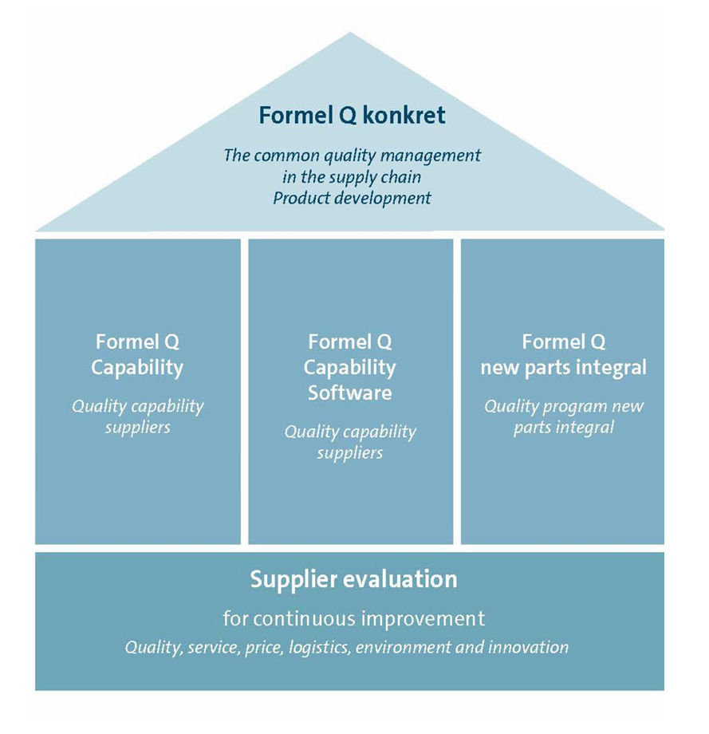
BIQS 全称是Built-In Quality Supply-based，是美国通用汽车供应商质量评估体系QSB+(Quality Systems Basic+)的升级版本，其供应商必须建立。旨在通过标准化流程和系统方法提升供应链质量管理能力，确保产品符合质量标准。
G-TQS 吉利汽车全流 程竞争力质量管理体系，借鉴了包括1SO9001、IATF16949、VDA、卓越绩效等质量管理理论的成熟方法，创造的更加立体、全面和系统的质量管理体系理论，实现了汽车生产组织从需求识别到需求满足的端到端的主动质量管理，聚焦于需求准确性、设计实现性、开发符合性、生产一致性和服务及时性五个汽车生产组织价值链不同阶段的核心竞争方向，提升业务活动流程化、标准化、制度化的成熟度，形成体系化管理的一套方法，提升汽车生产组织的质量竞争力，是汽车生产组织保证顾客对产品和服务更满意的基础。
ISO 26262
ISO 26262《道路车辆功能安全》以安全相关电子电气系统的特点所制定的功能安全标准，基于 IEC 61508《安全相关电气/电子/可编程电子系统功能安全》制定。
功能安全之设计议题在汽车领域已被重视，因其关系人员安全与公司商誉等问题，透过 危害分析与风险评估（Hazard Analysis & Risk Assessment，HARA） 及V模型设计架构，使功能安全需求等级得到一致性的分析结果，以利汽车电子系统之生命周期考虑到所需失效防止技术与管理要求，并借由设计开发、 验证（Verification） 及 确认（Validation） 等能力成熟度模型集成（CMMI-DEV）流程加以实现，使得产品之功能安全符合所需汽车安全完整性等级（ASIL）。
汽车网络安全中众所周知的 ISO 21434 中的TARA、Verification、Validation 等就是衍生/参考自 ISO 26262 。当有定义不清楚时，可以参考已经成熟的功能安全的实践。
开发流程
在汽车工业的早期阶段，开发流程相对简单且非正式。车辆的设计、开发和生产主要依赖于工程师的技能、经验和直觉。那时的流程缺少结构化和标准化，车辆从概念到生产的周期很长，生产成本也相对较高。
随着时间的推移，随着需求的增长和竞争的加剧，逐步出现了更加结构化的开发流程。这一时期，流程开始涵盖了更多的阶段，包括市场调研、概念设计、工程设计、原型测试和生产准备。
为了控制车辆开发项目，各家整车厂纷纷建立自己的开发流程模型（例如通用的GVDP、大众的PEP、沃尔沃的VPDS、捷豹路虎的PCS、上汽CPMP、福特的GPDS、吉利的NPDS、蔚来NPDP 等等）。
APQP
APQP（Advanced Product Quality Planning and Control Plan）的前身是福特汽车的AQP（Advanced Quality Planning），北美汽车 OEM 在 1994 年共同创建了 APQP 流程，并成为了 IATF 16949 核心工具之一。
它是一种产品开发的结构化方法，用来定义和执行为确保产品满足顾客所必需的活动。包括**阶段：
（1）计划和确定项目阶段
（2）产品设计和开发阶段
（3）过程设计和开发阶段
（4）产品与过程确认阶段
（5）反馈、评定和纠正措施阶段
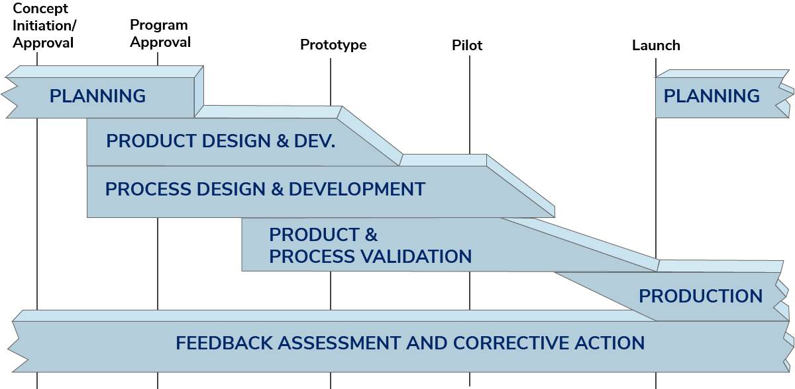
VDA MLA
VDA MLA（Maturity Level Assurance for New Parts，新零件成熟度保障）是德国汽车工业联合会（VDA）制定的一套标准，用于确保汽车行业新零件开发过程中的质量成熟度，降低量产风险。它主要应用于供应商与主机厂（OEM）之间的新产品开发项目，确保零件在批量生产前达到所需的成熟度水平。
VDA MLA 是汽车行业新零件开发的核心管理工具，通过 7个成熟度等级 确保产品从概念到量产的可靠性。它弥补了APQP在阶段管控上的不足，尤其适用于德系供应链。企业实施时需结合 FMEA、PPAP、VDA 6.3 等工具，形成完整的新品开发质量保障体系。
VDA MLA 将新零件开发分为 7个成熟度等级（ML0-ML6）。
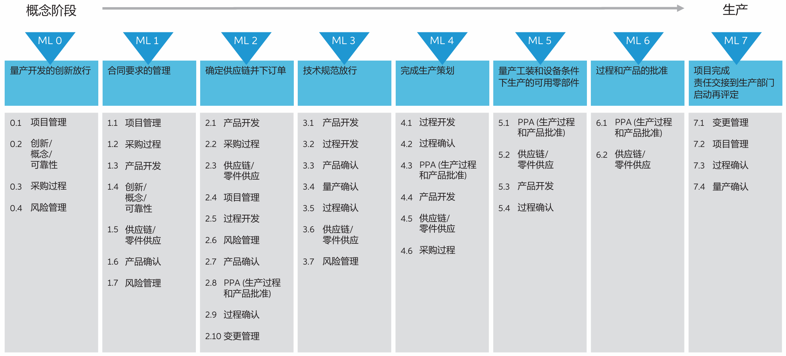
每个等级对应不同的开发阶段和质量要求：
| 成熟度等级 (ML) | 阶段名称 | 关键任务 |
|---|---|---|
| ML0 | 概念与可行性分析 | 确定技术可行性、初步风险评估（如材料、工艺）。 |
| ML1 | 需求规范冻结 | 完成技术规范（如图纸、D-FMEA），确定供应商并签署开发协议。 |
| ML2 | 设计冻结 | 完成详细设计（如CAD数据、BOM），并验证模拟分析结果。 |
| ML3 | 原型样件（Prototype） | 制造首批样件，进行功能测试（如DV试验），确认是否符合设计要求。 |
| ML4 | 试生产（Pre-Series） | 小批量试生产（如工装样件），验证生产工艺稳定性（如PV试验）。 |
| ML5 | 量产准备（Series Maturity） | 完成所有测试（如耐久性、环境测试），确保生产设备、工艺达到量产要求。 |
| ML6 | 批量生产（Series Production） | 进入稳定量产，持续监控过程能力（如Cp/Cpk）和交付表现。 |
成熟度保障（以下简称：MLA）第3版更加注重网络安全，在软件开发过程中也非常重要；集成有关软 件成熟度保障的进一步测量标准和注释，包括有关汽车网络安全 的要求；同时也新增了A-、B-、C-、D-样件的定义。
全球整车开发流程(GVDP)
GVDP（Global Vehicle Development Process），整车开发流程是通用汽车的全球汽车开发流程，也是汽车领域最广为人知的开发流程之一。GVDP是界定一辆汽车从概念设计经过产品设计、工程设计到制造，最后转化为商品的整个过程中各业务部门责任和活动的描述。整车产品开发流程也是构建汽车研发体系的核心，直接体现研发模式的思想。
整车开发流程遵循将整车开发划分为概念开发、设计工程、工程开发和产品验证、生产准备四个阶段。这些阶段进一步细分为项目启动批准、项目批准、工程发布、产品和工艺验证、预试生产、试生产和正式投产，共涵盖八个质量阀，旨在确保整车开发的质量和可靠性。
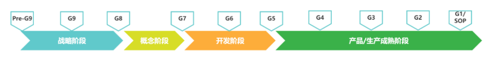
GVDP 2.0核心安全要求确立了对信息安全管理的几个关键要素，包括威胁建模、风险评估、安全设计、安全测试、安全事件响应和事故处理等。这些要求旨在指导制造商和供应商实现一个安全的汽车生产环境，并确保产品在交付给消费者之前满足安全要求。
大众PEP
PEP，全称“Product Entstehungs Prozess”，即“产品诞生过程”。这一流程覆盖了从项目启动（PM）到市场投放（ME）的整个汽车形成过程。大众汽车的PEP流程注重项目的系统性、科学性和前瞻性，确保产品从概念到量产的每一步都经过严格的验证和优化。
大众汽车的PEP流程包含了多个关键里程碑，这些里程碑标志着项目进展的重要节点。以下是PEP流程中的主要里程碑。
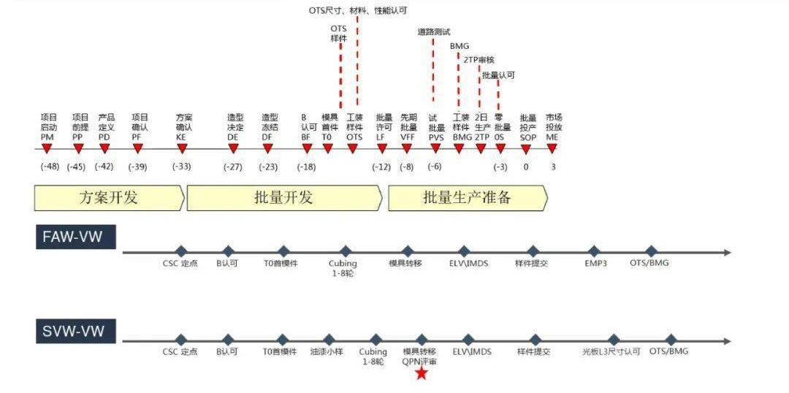
上汽 CPMP
上汽集团的整车开发流程（CPMP，Complete Project Management Process）是一个全面的、系统化的整车开发流程，衍生自 GVDP。
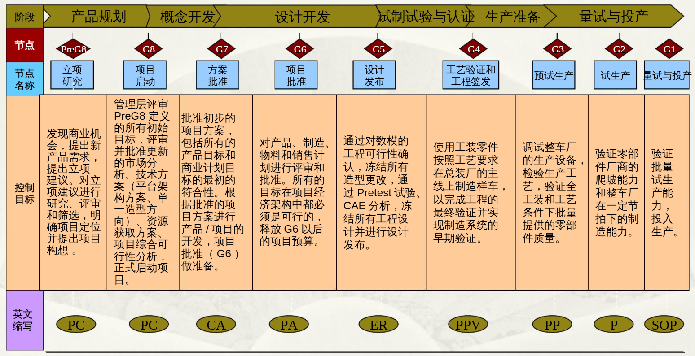
奇瑞
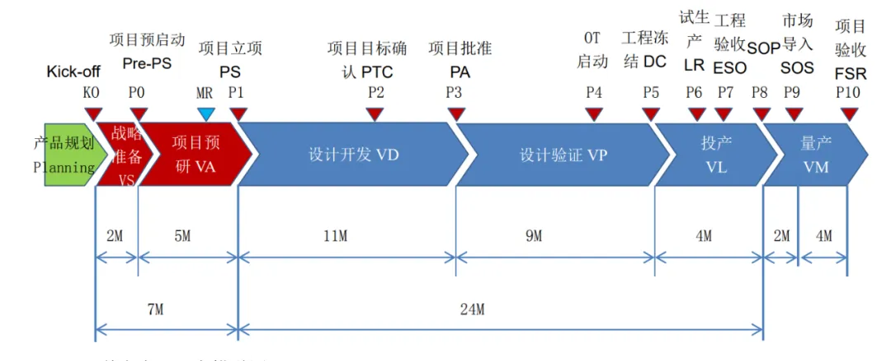
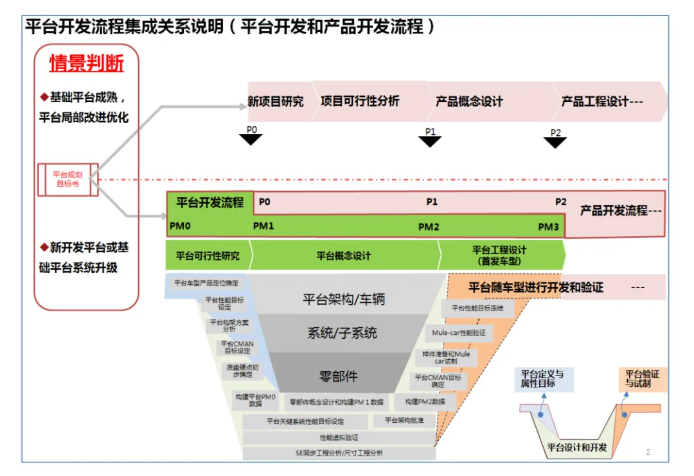
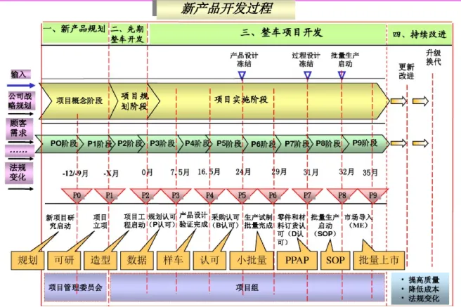
| 阶**段** | 目标 | 输入 | 活动 | 时间节点 | 输出 |
|---|---|---|---|---|---|
| 一、新产品规划 | 结合公司战略规划和客户需求，确定初步的项目目标。 | 公司战略规划、顾客需求、法规变化等外部因素。 | 市场调研、竞争分析、产品方向初步评估。 | 从战略导入到P0阶段，约9-12个月。 | 初步项目目标、产品方向评估报告。 |
| 1. 项目概念阶段 | 结合战略与市场需求评估新产品概念，确定其可行性。 | 公司战略规划、顾客需求、法规变化、市场调研结果。 | 进行市场调研、竞争分析、产品方向的初步评估。 | 从战略导入到P0阶段，约9-12个月。 | 新产品概念评估报告、市场调研和竞争分析结果。 |
| 2. 项目规划阶段 | 明确产品的总体需求、资源和开发计划。 | 项目需求、功能定义、资源分配、投资计划。 | 确定项目的立项条件、功能定义、投资计划，分配开发资源。 | P0阶段后，进入P1阶段。 | 项目立项条件文档、功能定义、投资计划、资源分配文件。 |
| P0 阶段（新项目研究） | 评估新产品概念的可行性，确保符合公司战略与市场需求。 | 战略规划、市场需求、客户反馈。 | 进行市场调研、技术可行性分析，评估新产品概念是否符合战略和市场需求。 | P0阶段，约9-12个月。 | 新产品概念评估报告、是否继续开发的决策依据。 |
| 二、先期整车开发 | 启动项目开发，明确开发目标和框架。 | 项目立项文件、目标框架。 | 成立项目组织机构、制定项目计划、明确各部门职责。 | 从P1阶段开始至P3阶段。 | 项目组织结构图、项目计划书、目标框架文件。 |
| P1 阶段（项目立项） | 项目立项并正式启动产品开发。 | 立项文件、投资计划、开发周期。 | 审批项目立项文件，确认项目开发计划，成立项目团队。 | P1阶段，项目管理委员会批准后。 | 项目立项文件、正式开发启动报告。 |
| P2 阶段（项目工程启动） | 项目组织机构成立，项目目标框架及开发计划的制定。 | 项目管理文件、目标框架。 | 制定项目网计划、资源分配，明确各部门职责，启动项目开发。 | P2阶段，项目启动后。 | 项目网计划、组织架构、目标框架文件。 |
| P3 阶段（规划认可） | 完成产品设计的可制造性和可装配性分析，进行DFMEA分析。 | 设计方案、DFMEA报告。 | 完成详细产品设计、DFMEA（设计失效模式与效应分析）、可制造性和可装配性分析。 | P3阶段，约6-9个月后。 | 设计文件、DFMEA分析报告、可制造性分析报告。 |
| 三、整车项目开发 | 完成设计验证，进行采购和生产准备。 | 样车、试验项目清单、设计验证报告。 | 完成设计验证、样车测试、产品设计更改并确认。 | 从P4阶段开始至P8阶段。 | 设计验证报告、产品设计更改确认、样车测试报告。 |
| P4 阶段（设计验证） | 完成设计验证，确保产品符合设计要求。 | 样车、试验数据、设计验证报告。 | 完成样车的试验，分析测试结果，验证设计是否符合要求。 | P4阶段，样车测试完成后。 | 设计验证报告、问题分析报告。 |
| P5 阶段（采购认可） | 完成产品设计确认，进入采购阶段。 | 设计确认报告、试验项目完成报告。 | 完成设计确认、设计更改，产品设计冻结，确认采购零部件。 | P5阶段，产品设计确认后。 | 设计确认报告、产品设计冻结报告、零部件采购计划。 |
| P6 阶段（生产试制） | 完成生产试制，验证生产能力与过程能力。 | 生产试制数据、生产能力报告、过程能力验证。 | 进行生产试制，验证单机生产能力和过程能力，确保所有部件到位。 | P6阶段，生产试制完成后。 | 生产试制报告、生产能力验证报告、零部件到位报告。 |
| P7 阶段（过程设计冻结） | 完成所有设计工作，准备进入量产阶段。 | 设计文件、生产工艺文件。 | 冻结设计和生产工艺，准备生产线调试，确保产品量产的可行性。 | P7阶段，准备进入量产阶段。 | 生产工艺设计文件、生产线布局图、设备调试报告。 |
| P8 阶段（批量生产启动 SOP ） | 启动批量生产，完成生产线调试和技术资料准备。 | 生产线调试数据、销售服务技术资料。 | 正式启动批量生产，进行生产线调试，准备产品交付。 | P8阶段，进入量产阶段后。 | 批量生产启动报告、销售服务技术资料。 |
| 四、持续改进 | 根据市场反馈进行产品升级，延续产品生命周期。 | 市场反馈、客户需求、法规变化。 | 根据市场反馈，优化产品设计和制造工艺，推出改款或换代产品。 | 产品投放市场后，持续改进阶段。 | 产品升级方案、市场反馈报告、改进后的产品设计方案。 |
| P9 阶段（市场导入） | 产品经过爬坡生产，稳定生产能力，开始批量投放市场。 | 市场需求、生产能力、客户反馈。 | 进行市场投放，爬坡生产，进行产品优化，根据反馈调整产品。 | P9阶段，产品进入市场后。 | 批量投放市场报告、市场反馈分析报告、产品优化方案。 |
软件规范
Automotive SPICE/ASPICE
Automotive SPICE(“Automotive Software Process Improvement and Capacity dEtermination,汽车软件过程改进及能力评定)模型框架,由德国汽车工业协会（VDA）质量管理中心 (QMC) 制订。基于ISO/IEC 15504（SPICE）框架，专门针对汽车电子和软件开发领域，旨在提升软件开发过程的质量和可靠性。
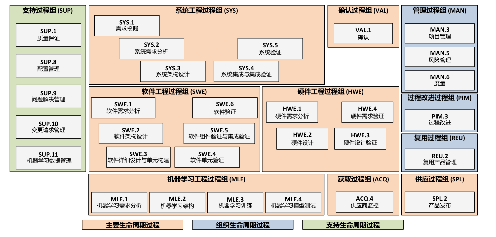
ASPICE 结合 ISO/SAE 21434（汽车网络安全标准）扩展了网络安全要求 Automotive SPICE for Cybersecurity，确保汽车电子系统的安全开发。
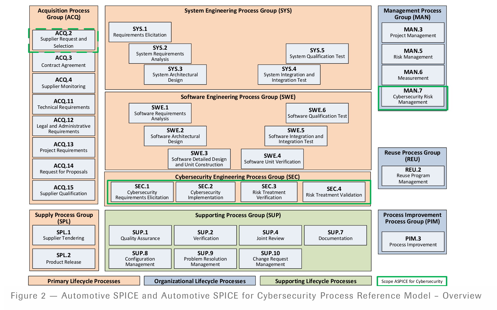
KGAS
KGAS （德语：“Konzern Grundanforderungen Software”[KGAS]）是大众汽车集团的基本要求软件是集团范围内的横截面规范，定义了大众汽车公司对安装在车辆上的车辆相关软件的最低要求。车辆相关软件包括对车辆及其功能有影响的所有软件组件。
KGAS 是为大众汽车公司开发控制单元或车辆软件的所有供应商合同的一部分。很多大众汽车供应商在项目定点前要进行KGAS的审核与认证。
参考
系列文章
- 车联网安全基础知识之汽车模块化平台
- 车联网安全基础知识之大众集团汽车电子电气架构
- 车联网安全基础知识之TBOX主要功能
- 车联网安全基础知识之大众J949(OCU/T-BOX)
- 车联网安全基础知识之充电基础设施
- 车联网安全基础知识之从插线端子分析车内通信网络结构
- 车联网安全基础知识之QNX命令
- 车联网安全基础知识之测试台架购买
- 车联网安全基础知识之USB SPH2.0线束制作
- 车联网安全基础知识之UDS刷写前置基础知识
- 车联网安全基础知识之 UDS 刷写安全
- 车联网安全基础知识之ECU常见接插件/连接器
- 车联网安全基础知识之数据库文件
- 车联网安全进阶之跨境传输检测方法与脚本
- 车联网安全进阶之整车渗透测试实践
- 车联网安全进阶之Trick——Android车机运行Python
- 车联网安全实践之ARCON-DB 2024年年度数据分享
点击原文，查看持续更新。